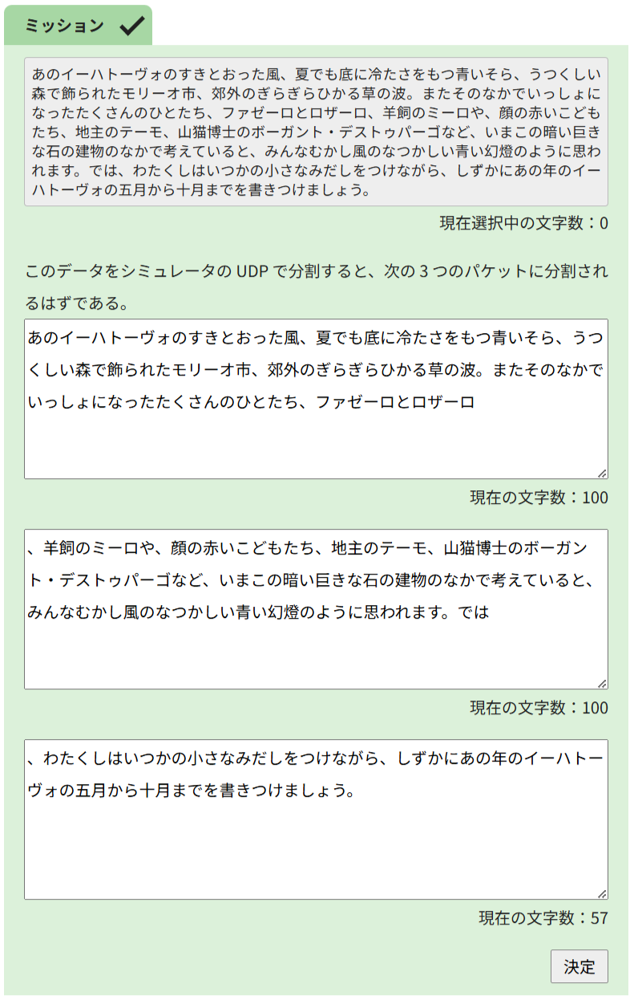

「完全版」各ページの解説
このページでは、学校の先生方を対象として「完全版」各ページを授業で扱う際のポイントなどについて説明します。
【はじめに】演習の狙い
このページは、自学自習にも対応するために、ProtoSim の使い方の一例を紹介しています。オンデマンドビデオの視聴など、適宜実際の授業内容に応じて追加の指示を行ってください。
また、ProtoSim には専門用語にマウスカーソルを重ねると説明が表示される機能など、自律的に学習を進めることを支援する機能が備わっています。それらを演示するなどし、各自でミッションに取り組む際に使えるようにしておくと後で役立ちます。
Web ページ閲覧の流れ
ProtoSim では、Web ページ閲覧という身近な場面を扱っています。このページでは、まずフタを閉じた初期状態で URL を入力し、Web ページが表示される様子を見てみることで、学習者の既存の経験と結び付けて自分事として捉えてもらうことを狙いとしています。
フタを開ける
前のページでは、ProtoSim が身近な場面を扱っているという前振りをしました。今度はフタを開けてみると、学習者にとって見慣れない表示がなされます。よく使っているネットワークも、実は中の仕組みをよく知らないことに気づいてもらい、学習の動機づけを行います。
シミュレータの見方
このページでは、シミュレータの見方を紹介しています。各教科書に記載されている図と ProtoSim の可視化とでは、リクエストとレスポンスが両方載っているなど少し違う箇所がありますので、そのギャップを埋めることがこのページの目的です。
また、データが流れる順番にアイコンをクリックしていって、「上の層のデータが箱の中に入れられている」「最終的には 0 と 1 のデータになっている」「それが相手側では逆の順番で元に戻されている」といった説明を口頭で補い、最初に全体像を把握できるようにすることも考えられます。
ここまでの URL 入力やアイコンクリックは繰り返し行う前提操作になりますので、すべての学習者が確実に自分で操作するようにしてください。
アプリケーション層 ①
このページでは、Web ページ閲覧時に通信相手が存在していることを理解します。Web ページのデータはどこからともなく現れるのではなく、Web サーバに保存されていて、それが転送されてくるのです。
- まず、レスポンスのアイコンをクリックして中身を確認し、HTML ファイルが含まれていることを確認します。
- 次に、Web サーバを操作し、その HTML ファイルがもともとは Web サーバに保存されていたことを確認します。
- 具体的には、
info1という名前のフォルダにinternet.htmlという名前のファイルとして保存されていたことを確認します。
アプリケーション層 ②
このページでは、URL の構造、特にパスの部分について理解します。
- まず、Web サーバを操作し、
info1という名前のフォルダにtags.htmlという名前のファイルも存在していることを確認します。 - 次に、スマートフォンの Web ブラウザから操作を行って、このファイルにアクセスします。この際、前のページでアクセスした
http://example.jp/info1/internet.htmlという URL をよく見ると、フォルダ名やファイル名が URL に含まれていることに気づきます。そのため、その部分を書き換えてhttp://example.jp/info1/tags.htmlという URL にアクセスすれば良いと考えられます。
このように、URL の構造もきちんとルールが決まっており、そのおかげで欲しいファイルがどれなのか Web ページに伝わり、正しく通信が行われることがわかりました。
なお、Apache などではデフォルトでパスを用いてフォルダ名やファイル名を指定しますが、他の Web アプリケーションではパスは必ずしもフォルダ名やファイル名を示すとは限りません。パスの部分を読んで処理の条件分岐を行うような Web アプリケーションも実現可能です。
トランスポート層 ①
このページでは、データをパケットに分割して通信を行っていることを理解します。
- これまで何度かアイコンが流れるアニメーションを見てきましたが、レスポンスではアイコンが複数個に分かれていました。
- レスポンスのアイコンをクリックしてその内容を実際に見てみます。スクロールすると、3 個の箱が表示されていることがわかります。また、ヘッダにもパケット数が 3 であることが明記されています。
- さらにヘッダを見ると、ボディの長さが 100, 100, 93 となっていることがわかります。つまり、ボディを 100 文字ごとに区切るように処理が行われていて、93 はあまりです。
- パケットの分割は手作業でも体験できます。
なお、最後のミッションの正答は次の通りです。

トランスポート層 ②
このページでは、パケットロスが発生してもなるべく確実にデータを相手に届けられるよう再送制御が行われていることを理解します。
- まず、ProtoSim でもパケットロスの設定を有効化できます。
- この状態で再度 URL を入力すると、パケットの 1 個が途中で消失してしまい、Web ページが表示できなくなったことが確認できます。
- これまでは UDP を使用していましたが、再送制御を行う TCP に切り替えます。
- この状態で改めて URL を入力すると、パケットロスが発生するのはそのままですが、後から消失したパケットを再送したことで、無事に Web ページが表示されました。
なお、本来は再送制御を行うために ACK と呼ばれるデータがやり取りされていますが、ProtoSim のシミュレータ内では表示を省略しています。
このように、パケットへの分割や再送制御など、データを確実に届けるための仕組みが働いていることがわかりました。パケットへ分割することの利点として、回線を占有しないことのほかに、再送を効率的に行えることも挙げられます。大きなデータを送信中に少しでもデータが壊れてしまうと、そのすべてを一から送りなおす必要があります。予めパケットに分割しておけば、壊れたパケットだけを再送するだけで済みます。
インターネット層 ①
このページでは、インターネットにおける住所のようなものとして、IP アドレスが使用されていることを学びます。
- ProtoSim で IP のデータを表示することで、ヘッダーに送信元と受信先の IP アドレスが記載されていることが確認できます。リクエストかレスポンスかによって、送信元と受信先が、スマートフォンか Web サーバかが変わることに注意が必要です。スマートフォンの IP アドレスは
198.51.100.1で、Web サーバの IP アドレスは203.0.113.7です。 xxx.xxx.xxx.xxxという形式の IP アドレスは普段あまり見慣れませんが、それは代わりにドメイン名を使用しているからです。ドメイン名の代わりに IP アドレスを使用したhttp://203.0.113.7/info1/internet.htmlという URL でも、同様に通信できることが確認できました。
インターネット層 ②
このページでは、ルーティングテーブルを用いて通信経路が決められていることを理解します。
- ProtoSim ではこれまで通信経路上のルーターの表示を省略していましたが、波線をクリックすることで表示可能です。
- この状態で改めて URL を入力すると、ルーターに沿ってアイコンが流れることが確認できます。
- 次に、ルーティングテーブルの見方を確認します。ルーターにカーソルを重ねるとルーティングテーブルが表示され、自身の IP アドレスに加え、宛先と転送先の表が載っていることがわかります。ルーティングテーブルによれば、
192.0.2.4のルーターが198.51.100.1宛てのデータを受け取ったとき、次は198.51.100.2のルーターに送り出します。 - また、アイコンが流れるアニメーションを見ると、実はレスポンスが通る経路が最短経路ではなかったことに気づきます。これを直すには、遠回りの方へ送り出しているルーターのルーティングテーブルを修正すれば良いです。つまり、IP アドレスが
203.0.113.6のルーターのルーティングテーブルについて、宛先が198.51.100.1のデータを受け取ったときの転送先を192.0.2.4にすれば、行きも帰りも最短経路を通るようになります。
このように、IP アドレスという住所のようなものを使ったルーティングテーブルを参照し、宛先に応じて次にどちらへ転送すれば良いかを判断していることがわかりました。
ネットワークインタフェース層 ①
このページでは、電波やケーブルなど物理的な方法を用いて 0 と 1 の列を表現できることを理解します。
- ProtoSim ではスマートフォンで Wi-Fi（電波）、Web サーバでイーサネット（ケーブル）を使用しています。アイコンをクリックしてデータの中身を見てみると、電波では 0 を表す M の形と 1 を表す W の形を用いて、ケーブルでは 0 を表す低い電圧の状態と 1 を表す高い電圧の状態を用いて、通信を行っていることが確認できます。
なお、Wi-Fi についてここではわかりやすく M の形・W の形と呼んでいますが、正確には位相の違いを用いています。また、実際にはより細かく位相を使い分けたり、振幅も使い分けたりして、1 つの波でもっと多くの情報量を伝えるような工夫が取り入れられています。
ネットワークインタフェース層 ②
このページでは、ノイズへの対策としてパリティチェックなどの誤り検出が用いられていることを理解します。
- ProtoSim のネットワークインタフェース層では、途中からデータを流し込むことができます。（こうしたユニットテストのようなことができるのも、通信プロトコルが階層化されて整理されている利点の 1 つです。）
- UTF-8 では
aの文字コードが01100001であると決められているのに対し、実際に流れたデータは011000011であり、末尾に 1 ビット分のパリティビットが増えていることが確認できます。 - 偶数パリティに基づいてパリティビットを
cの文字コードに付与すると、011000110になります。 - 偶数パリティに基づいてパリティビットを
dの文字コードに付与すると、011001001になります。 xの文字コードを調べるために、シミュレータでxを流し込みます。ただし、ここで流れたデータにはパリティビットが付与されているため、それを取り除いた01111000がxの文字コードであるとわかります。
このように、0 と 1 の列を相手に伝えるために物理的な方法を用いていますが、その性質上ノイズが発生することもあるため、誤り検出を行っていることがわかりました。